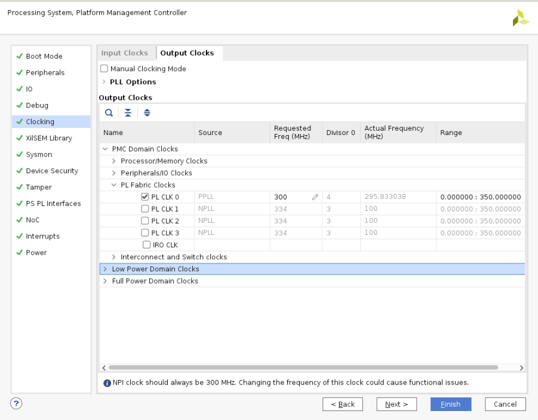
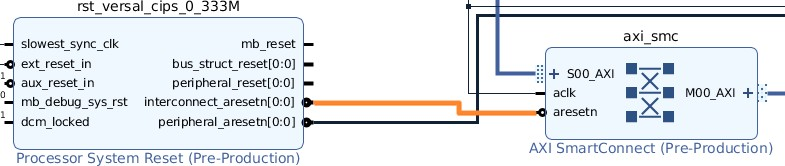
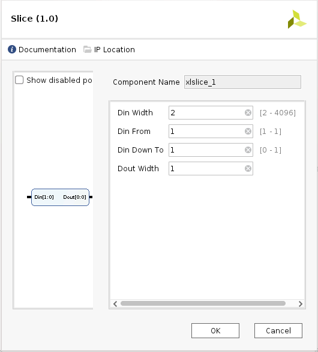
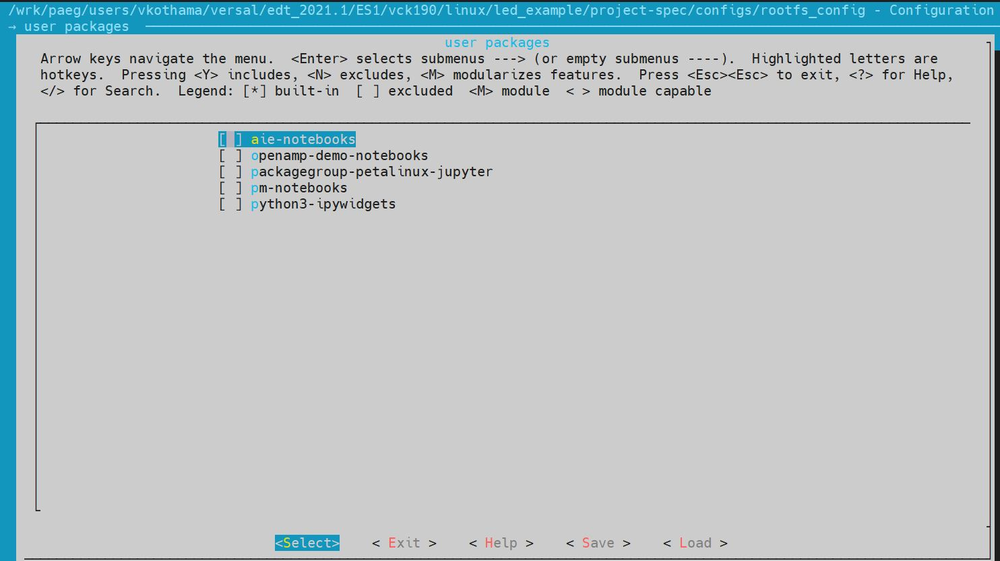

System Design Example using Scalar Engine and Adaptable Engine¶
This chapter guides you through building a system based on Versal™ devices using available tools and supported software blocks. This chapter demonstrates how to use the AMD Vivado™ Design Suite to create an embedded design using PL AXI GPIO and PL AXI UART. It also describes how to configure and build the Linux operating system for an Arm® Cortex™-A72 core-based APU on a Versal device.
Examples using the PetaLinux tool are provided in this chapter.
Note
The design files for this chapter have been validated with Vivado Design Suite 2022.1.
Design Example: Using AXI GPIO¶
The Linux application uses a PL-based AXI GPIO interface to monitor the DIP switch of the board and accordingly control the LEDs on the board. The LED application can run on VCK190 and VMK180 boards.
The RPU application uses the PL-based AXI UART lite to print the debug messages on the AXI UART console instead of using the PS UART console. The PL UART application can run on VCK190 and VMK180 boards.
Configuring Hardware¶
The first step in this design is to configure the PS and PL sections. You can do this using the Vivado IP integrator. Start with adding the required IPs from the Vivado IP catalog and then connect the components to blocks in the PS subsystem. To configure the hardware, follow these steps:
Note
If the Vivado Design Suite is open already, jump to step 3.
Open the Vivado project you created in Versal CIPS and NoC (DDR) IP Core Configuration.
C:/edt/edt_versal/edt_versal.xpr
In the Flow Navigator, under IP Integrator, click Open Block Design.

Right-click the block diagram and select Add IP.
Connecting IP Blocks to Create a Complete System¶
To connect IP blocks to create a system, follow these steps.
Double-click the Versal CIPS IP core.
Click PS-PMC→ PS-PL Interfaces.
Enable the M_AXI_FPD interface and set the Number of PL Resets to 1, as shown in the Image.

Click Clocking, and then click on the Output Clocks tab.
Expand PMC Domain Clocks. Then expand PL Fabric Clocks. Configure the PL0_REF_CLK to 300 MHz as shown in the following figure:
Click Finish and OK to complete the configuration and return to the block diagram.
Adding and Configuring IP Addresses¶
To add and configure IP addresses, follow these steps.
Right-click the block diagram and select Add IP from the IP catalog.
Search for AXI GPIO and double-click the AXI GPIO IP to add it to your design.
Add another instance of the AXI GPIO IP into the design.
Search for AXI Uartlite in the IP catalog and add it into the design.
Click Run Connection Automation in the Block Design view.
The Run Connection Automation dialog box opens.
In the Run Connection Automation dialog box, select the All Automation check box.

This checks the automation for all the ports of the AXI GPIO IP.
Click GPIO of axi_gpio_0 and set the Select Board Part Interface to Custom as shown below.
Click S_AXI of axi_gpio_0. Set the configurations as shown in the following figure:
Do Repeat previous step 7 and Step 8 for axi_gpio_1.
Click S_AXI of axi_uartlite_0. Set the configurations as shown in the following figure:
This configuration sets the following connections:
Connects the S_AXI of AXI_GPIO and AXI Uartlite to M_AXI_FPD of CIPS with SmartConnect as a bridge IP between CIPS and AXI GPIO IPs.
Enables the processor system reset IP.
Connects the pl0_ref_clk to the processor system reset, AXI GPIO, and the SmartConnect IP clocks.
Connects the reset of the SmartConnect and AXI GPIO to the peripheral_aresetn of the processor system reset IP.
Click UART of axi_uartlite_0. Set the configurations as shown in the following figure:
Click OK.
Click Run Connection Automation in the block design window and select the All Automation check box.
Click ext_reset_in and configure the setting as shown below.
This connects the ext_reset_in of the processor system reset IP to the pl_resetn of the CIPS.
Click OK.
Disconnect the aresetn of SmartConnect IP from peripheral_aresetn of processor system reset IP.
Connect the aresetn of SmartConnect IP to interconnect_aresetn of processor system reset IP.
Double-click the axi_gpio_0 IP to open it.
Go to the IP Configuration tab and configure the settings as shown in the following figure.
Make the same setting for axi_gpio_1.
Add four more instances of Slice IP.
Delete the external pins of the AXI GPIO IP and expand the interfaces.
Connect the output pin gpio_io_0 of axi_gpio_0 to slice 0 and slice 1.
Similarly, connect the output pin gpio_io_0 of axi_gpio_1 to slice 2 and slice 3.
Make the output of Slice IP as External.
Configure each Slice IP as shown below.

Double-click axi_uartlite_0 to open the IP.
In the Board tab, set Board interface as shown below:
Go to the IP Configuration tab and configure the settings as shown in the following figure.
Add Clock Wizard IP. Double-click to open the IP.
Go to Clocking Features tab and set the configuration as shown below:
Make sure the Source option in Input Clock Information is set to Global buffer.
Go to Output clocks tab and configure as follows:
Right-click pl0_ref_clk of CIPS and click Disconnect Pin.
Connect the pl0_ref_clk from CIPS to input clk_in1 of the Clocking wizard.
Connect the output of clocking wizard to slowest_sync_clock of Processor System Reset IP.
This will help in avoiding timing failure.
The overall block design is shown in the following figure:
Validating the Design and Generating the Output¶
To validate the design and to generate the output product, follow these steps:
Return to the block design view and save your block design (press Ctrl+S).
Right-click in the white space of the Block Diagram view and select Validate Design. Alternatively, you can press the F6 key. A message dialog box opens as shown below.
The Vivado tool will prompt you to map the IPs in the design to an address. Click Yes.
Note
The number of address segments may vary depending on the number of memory mapped IPs in the design.
Once the validation is complete, A message dialog box opens as shown below:

Click OK to close the message.
Click the Sources window.
Expand Constraints.
Right-click on constrs_1-> ADD Sources.
The Add Sources window opens.
Choose Add or Create Constraints option and click Next.
Choose the .xdc file to be added.
Note
The constraints file is provided as part of the package in the pl_gpio_uart/constrs folder.
Click Finish.
Click Hierarchy.
In the Sources window, under Design Sources, expand edt_versal_wrapper.
Right-click the top-level block design, edt_versal_i : edt_versal (edt_versal.bd), and select Generate Output Products.

Click Generate.
When the Generate Output Products process completes, click OK.
In the Sources window, click the IP Sources view. Here, you can see the output products that you just generated, as shown in the following figure.
Synthesizing, Implementing, and Generating the Device Image¶
Follow these steps to generate a device image for the design.
Go to Flow Navigator→ Program and Debug, click Generate Device Image and click OK.
A No Implementation Results Available menu appears. Click Yes.
A Launch Run menu appears. Click OK.
When the Device Image Generation completes, the Device Image Generation Completed dialog box opens.
Click Cancel to close the window.
Export hardware after you generate the Device Image.
Note
The following steps are optional and you can skip these and go to the Exporting Hardware section. These steps provide the detailed flow for generating the device image by running synthesis and implementation before generating device image. If you need to understand the flow for generating the device image, follow the steps provided below.
Go to Flow Navigator→ Synthesis and click Run Synthesis.

If Vivado prompts you to save your project before launching synthesis, click Save.
While synthesis is running, a status bar is displayed in the upper right-hand window. This status bar spools for various reasons throughout the design process. The status bar signifies that a process is working in the background. When synthesis is complete, the Synthesis Completed dialog box opens.
Select Run Implementation and click OK.
When implementation completes, the Implementation Completed dialog box opens.
Select Generate Device Image and click OK.
When Device Image Generation completes, the Device Image Generation Completed dialog box opens.
Click Cancel to close the window.
Export hardware, after you generate Device Image.
Exporting Hardware¶
From the Vivado main menu, select File→ Export → Export Hardware. The Export Hardware dialog box opens.
Choose Include bitstream and click Next.
Provide a name for your exported file (or use the default provided) and choose the location. Click Next.
A warning message appears if a hardware module has already been exported. Click Yes to overwrite the existing XSA file, if the overwrite message is displayed.
Click Finish.
Example Project: FreeRTOS AXI UARTLITE Application Project with RPU¶
This section explains how to configure and build the FreeRTOS application for an Arm Cortex-R5F core based RPU on a Versal device.
The following steps demonstrate the procedure to create a FreeRTOS Application from Arm Cortex-R5F:
Start the AMD Vitis™ IDE and create a new workspace, for example,
c:/edt/freertos.Select File→ New → Application Project. The Creating a New Application Project wizard opens. If this is the first time that you have launched the Vitis IDE, you can select Create Application Project on the Welcome screen as shown in the following figure.
Note
Optionally, you can check the box next to Skip welcome page next time to skip seeing the welcome page every time.
There are four components of an application project in the Vitis IDE: a target platform, a system project, a domain and a template. To create a new application project in the Vitis IDE, follow these steps:
A target platform is composed of a base hardware design and the meta-data used in attaching accelerators to declared interfaces. Choose a platform or create a platform project from the XSA that you exported from the Vivado Design Suite.
Put the application project in a system project, and associate it with a processor.
The domain defines the processor and operating system used for running the host program on the target platform.
Choose a template for the application, to quick start development. Use the following information to make your selections in the wizard screens.
Table 9: Wizard Information
Wizard Screen
System Properties
Setting or Command to Use
Platform
Create a new platform from hardware (XSA)
Click Browse to add your XSA file
Platform Name
vck190_platform
Application Project Detail
Application project name
freertos_gpio_test
Select a system project
+Create New
System project name
freertos_gpio_test_system
Processor
versal_cips _0_pspmc_0_psv_cortexr5_0
Dom
Select a domain
+Create New
Name
The default name assigned
Display Name
The default name assigned
Operating System
freertos10_xilinx
Processor
versal_cips _0_pspmc_0_psv_cortexr5_0
Templates
Available
Empty
Templates
Application (C)
The Vitis software platform creates the board support package for the Platform project (vck190_platform) and the system project (freertos_gpio_test_system) containing an application project named freertos_gpio_test under the Explorer view after performing the preceding steps.
Delete the source files under src/ directory and Copy the freertos source code files from the FreeRTOS project path,
<design-package>/ch5_system_design_example_source__files/rpu/to thesrc/directory.Configure the Vitis IDE to enable AXI UARTLITE for RPU application debug console under the FreeRTOS Board Support Package.
Navigate to platform.spr under vck190_platform project, and then select Modify BSP settings under Board support package, and modify stdin and stdout to axi_uarlite_0 by pressing <Y> option as shown in the figure.
Click <OK> to save the above configuration and exit the configuration wizard.
Right-click freertos_gpio_test_system and select Build Project. Alternatively, you can click
 .
.For building the Linux images and incorporating the FreeRTOS elf into the image, see Example Project: Creating Linux Images Using PetaLinux.
On PL AXI UART Serial Console, RPU debug logs will be printed as below:
Gpio Initialization started Counter 0 Counter 1 Counter 2 Counter 3 Counter 4 Counter 5
Example Project: Creating Linux Images Using PetaLinux¶
This section explains how to configure and build the Linux operating system for an Arm Cortex-A72 core-based APU on a Versal device. You can use the PetaLinux tool with the board-specific BSP to configure and build Linux images.
This example needs a Linux host machine. Refer to the PetaLinux Tools Documentation Reference Guide [UG1144] for information on dependencies and installation procedure for the PetaLinux tool.
Important
This example uses the VCK190 PetaLinux BSP to create a PetaLinux project. Ensure that you have downloaded the respective BSP for PetaLinux (VCK190/VMK180/VPK180).
Board |
QSPI/SD |
OSPI |
eMMC |
|---|---|---|---|
VCK190 Production Board |
|||
VMK180 Production Board |
|||
VPK180 Production Board |
N/A |
N/A |
Copy the respective board’s PetaLinux BSP to the current directory.
Set up the PetaLinux environment
$ source <petalinux-tools-path>/settings.csh
Create a PetaLinux project using the following command.
$ petalinux-create -t project -s xilinx-vck190-vxxyy.z-final.bsp -n led_example
Note
For the VMK180 board, use xilinx-vmk180-vxxyy.z-final.bsp after the -s option in the command.
Change to the PetaLinux project directory using the following command.
$cd led_example
Copy the hardware platform project XSA to the Linux host machine.
Note
For the VMK180 board, use the XSA file that you generated in the Design Example: Using AXI GPIO.
Reconfigure the BSP using the following commands.
$ petalinux-config --get-hw-description=<path till the directory containing the respective xsa file>
This command opens the PetaLinux Configuration window. For this example, no need to change anything in this window.
Click <Save> to save the above configuration and then <Exit> to exit the configuration wizard.
Create a Linux application named gpiotest within the PetaLinux project using the following command.
$petalinux-create -t apps --template install --name gpiotest --enable
Copy application files from
<design-package>/<vck190 or vmk180>/linux/bootimagesto the project using the following commands.$cp <design-package>/ch5_system_design_example_source__files/apu/gpiotest_app/gpiotest/files/* <plnxproj-root>/project-spec/meta-user/recipes-apps/gpiotest/files/ $cp <design-package>/ch5_system_design_example_source__files/apu/gpiotest_app/gpiotest/gpiotest.bb <plnx-proj-root>/project-spec/meta-user/recipes-apps/gpiotest/gpiotest.bb $cp <design-package>/ch5_system_design_example_source__files/apu/device_tree/system-user.dtsi <plnx-proj-root>/project-spec/meta-user/recipes-bsp/device-tree/files/system-user.dtsi
Enable GPIO support within kernel configuration.
$petalinux-config -c kernel
Note
This command opens the kernel configuration wizard for the PetaLinux project.
Navigate to Device drivers→ GPIO Support and enable it by pressing the <Y> key. Press Enter and enable the Debug GPIO calls and
/sys/class/gpio/...(sysfs interface)entries by pressing the <Y> key as shown in the following figure.
Navigate to Memory mapped GPIO drivers and enable GPIO support and Zynq GPIO support by pressing <Y> key as shown in the following figure.

Click <Save> to save the above configuration and then <Exit> option to exit the configuration wizard.
Configure ROOTFS to disable the AIE, STDC++, and Tcl options to reduce the rootfs size to fit into both SD and OSPI/QSPI Flash partitions.
petalinux-config -c rootfs
Navigate to User Packages and disable aie-notebooks, openamp-demo-notebooks, packagegroup-petalinux-jupyter, pm-notebooks, python3-ipywidgets support by pressing <Y> key as shown in the following figure.
Navigate to Filesystem Packages → misc → gcc-runtime and disable libstdc++ support by pressing <Y> key as shown in the following figure.

Navigate to Filesystem Packages → devel → tcltk → tcl and disable tcl support by pressing <Y> key as shown in the following figure.

Click <Save> to save the above configuration and then click <Exit> to exit the configuration wizard.
Note
OSPI and eMMC boot modes will work only on VCK190/VMK180 REVB Production boards.
Build the Linux images using the following command.
$ petalinux-build
Combining FreeRTOS and APU Images using a BIF File¶
Open the XSCT console in your Vitis IDE workspace.
Navigate to the
images/linuxdirectory of your PetaLinux project:$ cd <petalinux-project>/images/linux/
Freertos elf file is supported only for QSPI/SD boot images. Copy the freertos_gpio_test.elf from
<design-package>/vck190/freertos/bootimages/freertos_gpio_test.elfto the images/linux directory.$ cp <design-package>/vck190/ready_to_test/qspi_images/freertos/freertos_gpio_test.elf .
Copy the bootgen.bif file from
<design-package>/to theimages/linuxdirectory.$ cp <design-package>/vck190/ready_to_test/qspi_images/linux/bootgen.bif .
Run the following command to create BOOT.BIN.
$ bootgen -image bootgen.bif -arch versal -o BOOT.BIN -w
This creates a BOOT.BIN image file in the
<petalinux-project>/images/linux/directory.
Note
To run the images using SD boot mode, see Boot Sequence for SD-Boot Mode.